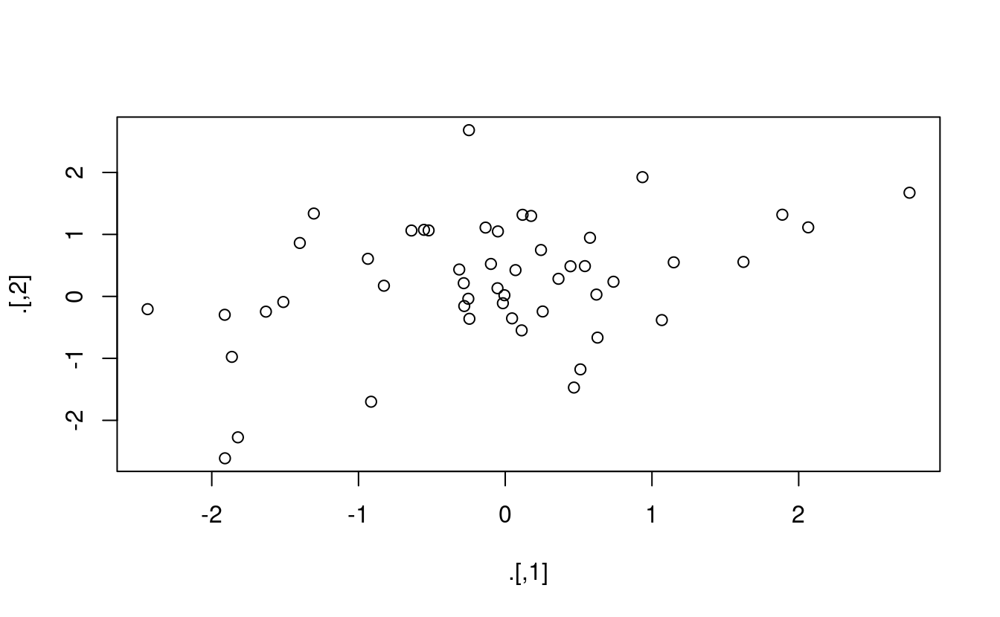

18 Pipe
18.1 Introduzione
Le pipe (‘tubi’) sono uno strumento potente per esprimere chiaramente una sequenza di operazioni multiple. Finora le avete usate senza sapere come funzionano o quali sono le alternative. Ora, in questo capitolo, è il momento di esplorare le pipe in modo più dettagliato. Imparerai le alternative alle pipe, quando non dovresti usare le pipe e alcuni utili strumenti correlati.
18.1.1 Prerequisiti
Il pipe, %>%, viene dal pacchetto magrittr di Stefan Milton Bache. I pacchetti nel tidyverse caricano automaticamente %>% per te, quindi di solito non carichi magrittr esplicitamente. Qui, tuttavia, ci stiamo concentrando sul piping, e non stiamo caricando nessun altro pacchetto, quindi lo caricheremo esplicitamente.
18.2 Alternative di pipe
Lo scopo del pipe è quello di aiutarvi a scrivere il codice in un modo che sia più facile da leggere e capire. Per vedere perché il pipe è così utile, esploreremo una serie di modi di scrivere lo stesso codice. Usiamo il codice per raccontare la storia di un coniglietto di nome Foo Foo:
Il coniglietto Foo Foo
Saltellava nella foresta
Raccogliendo i topi di campagna
E li colpiva sulla testa
Questa è una poesia popolare per bambini che è accompagnata da azioni manuali.
Inizieremo definendo un oggetto per rappresentare il coniglietto Foo Foo:
foo_foo <- little_bunny()E useremo una funzione per ogni verbo chiave: hop(), scoop() e bop(). Usando questo oggetto e questi verbi, ci sono (almeno) quattro modi in cui potremmo raccontare la storia nel codice:
- Salvare ogni passo intermedio come un nuovo oggetto.
- Sovrascrivere l’oggetto originale molte volte.
- Comporre le funzioni.
- Usare la pipe.
Lavoreremo attraverso ogni approccio, mostrandovi il codice e parlando dei vantaggi e degli svantaggi.
18.2.1 Passi intermedi
L’approccio più semplice è salvare ogni passo come un nuovo oggetto:
foo_foo_1 <- hop(foo_foo, through = forest)
foo_foo_2 <- scoop(foo_foo_1, up = field_mice)
foo_foo_3 <- bop(foo_foo_2, on = head)Il principale svantaggio di questa forma è che ti costringe a nominare ogni elemento intermedio. Se ci sono nomi naturali, questa è una buona idea, e dovreste farlo. Ma molte volte, come in questo esempio, non ci sono nomi naturali, e si aggiungono suffissi numerici per rendere unici i nomi. Questo porta a due problemi:
Il codice è ingombro di nomi poco importanti
Devi incrementare attentamente il suffisso su ogni linea.
Ogni volta che scrivo codice come questo, invariabilmente uso il numero sbagliato su una linea e poi passo 10 minuti a grattarmi la testa e a cercare di capire cosa è andato storto nel mio codice.
Potreste anche preoccuparvi che questo modulo crei molte copie dei vostri dati e occupi molta memoria. Sorprendentemente, non è questo il caso. In primo luogo, notate che preoccuparsi proattivamente della memoria non è un modo utile di spendere il vostro tempo: preoccupatevene quando diventa un problema (cioè quando finite la memoria), non prima. In secondo luogo, R non è stupido, e condividerà le colonne tra i frame di dati, dove possibile. Diamo un’occhiata ad un’effettiva pipeline di manipolazione dei dati in cui aggiungiamo una nuova colonna a ggplot2::diamonds:
diamonds <- ggplot2::diamonds
diamonds2 <- diamonds %>%
dplyr::mutate(price_per_carat = price / carat)
pryr::object_size(diamonds)
#> 3.46 MB
pryr::object_size(diamonds2)
#> 3.89 MB
pryr::object_size(diamonds, diamonds2)
#> 3.89 MBLa funzione pryr::object_size() dà la memoria occupata da tutti i suoi argomenti. I risultati sembrano controintuitivi all’inizio:
-
diamondsoccupa 3.46 MB, -
diamonds2occupa 3.89 MB, -
diamondsediamonds2insieme occupano 3,89 MB!
Come può funzionare? Beh, diamonds2 ha 10 colonne in comune con diamonds: non c’è bisogno di duplicare tutti quei dati, quindi i due data frame hanno variabili in comune. Queste variabili vengono copiate solo se si modifica una di esse. Nell’esempio seguente, modifichiamo un singolo valore in diamonds$carat. Ciò significa che la variabile carat non può più essere condivisa tra i due frame di dati e deve essere fatta una copia. La dimensione di ogni data frame è invariata, ma la dimensione collettiva aumenta:
diamonds$carat[1] <- NA
pryr::object_size(diamonds)
#> 3.46 MB
pryr::object_size(diamonds2)
#> 3.89 MB
pryr::object_size(diamonds, diamonds2)
#> 4.32 MB(Si noti che qui usiamo pryr::object_size(), non il built-in object.size(). La funzione object.size() prende solo un singolo oggetto quindi non può calcolare come i dati sono condivisi tra più oggetti).
18.2.2 Sovrascrivere l’originale
Invece di creare oggetti intermedi ad ogni passo, potremmo sovrascrivere l’oggetto originale:
foo_foo <- hop(foo_foo, through = forest)
foo_foo <- scoop(foo_foo, up = field_mice)
foo_foo <- bop(foo_foo, on = head)Questo è meno digitare (e meno pensare), quindi hai meno probabilità di fare errori. Tuttavia, ci sono due problemi:
Il debugging è doloroso: se fate un errore dovrete rieseguire l’intera pipeline completa dall’inizio.
La ripetizione dell’oggetto che viene trasformato (abbiamo scritto
foo_foosei volte! volte!) oscura ciò che sta cambiando su ogni linea.
18.2.3 Composizione di funzioni
Un altro approccio è quello di abbandonare l’assegnazione e semplicemente mettere insieme le chiamate di funzione:
bop(
scoop(
hop(foo_foo, through = forest),
up = field_mice
),
on = head
)Qui lo svantaggio è che si deve leggere dall’interno verso l’esterno, da destra a sinistra, e che gli argomenti finiscono per essere molto distanziati (chiamato evocativamente il problema dagwood sandwhich). In breve, questo codice è difficile da consumare per un umano.
18.2.4 Usa la pipe
Infine, possiamo usare la pipe:
Questa è la mia forma preferita, perché si concentra sui verbi, non sui nomi. Potete leggere questa serie di composizioni di funzioni come se fosse un insieme di azioni imperative. Foo Foo hop, poi scoop, poi bops. L’aspetto negativo, naturalmente, è che dovete avere familiarità con il pipe. Se non avete mai visto %>% prima, non avrete idea di cosa faccia questo codice. Fortunatamente, la maggior parte delle persone capisce l’idea molto velocemente, così quando condividete il vostro codice con altri che non hanno familiarità con la pipe, potete facilmente insegnarglielo.
La pipe funziona eseguendo una “trasformazione lessicale”: dietro le quinte, magrittr riassembla il codice nella pipe in una forma che funziona sovrascrivendo un oggetto intermedio. Quando si esegue una pipe come quella sopra, magrittr fa qualcosa del genere:
my_pipe <- function(.) {
. <- hop(., through = forest)
. <- scoop(., up = field_mice)
bop(., on = head)
}
my_pipe(foo_foo)Questo significa che la pipe non funziona per due classi di funzioni:
1.Funzioni che usano l’ambiente corrente. Per esempio, assign() creerà una nuova variabile con il nome dato nell’ambiente corrente:
```r
assign("x", 10)
x
#> [1] 10
"x" %>% assign(100)
x
#> [1] 10
```
L'uso di assign con il pipe non funziona perché lo assegna a
un ambiente temporaneo usato da `%>%`. Se volete usare l'assegnazione con la
pipe, dovete essere espliciti riguardo all'ambiente:
```r
env <- environment()
"x" %>% assign(100, envir = env)
x
#> [1] 100
```
Altre funzioni con questo problema sono `get()` e `load()`.-
Funzioni che usano lazy evaluation. In R, gli argomenti delle funzioni sono calcolati solo quando la funzione li usa, non prima di chiamare la funzione. La pipe calcola ogni elemento a turno, quindi non potete contare su questo comportamento.
Un posto in cui questo è un problema è
tryCatch(), che vi permette di catturare e gestire gli errori:tryCatch(stop("!"), error = function(e) "An error") #> [1] "An error" stop("!") %>% tryCatch(error = function(e) "An error") #> [1] "An error"There are a relatively wide class of functions with this behaviour, including
try(),suppressMessages(), andsuppressWarnings()in base R.
18.3 Quando non usare la pipe
La pipe è uno strumento potente, ma non è l’unico strumento a vostra disposizione, e non risolve tutti i problemi! Le pipe sono utili soprattutto per riscrivere una sequenza lineare di operazioni abbastanza breve. Penso che dovreste cercare un altro strumento quando:
Le vostre pipe sono più lunghe di (diciamo) dieci passi. In questo caso, create oggetti intermedi con nomi significativi. Questo renderà il debug più facile, perché potete controllare più facilmente i risultati intermedi, e rende più facile capire il vostro codice, perché i nomi delle variabili possono aiutare comunicare l’intento.
Avete più ingressi o uscite. Se non c’è un oggetto primario che viene trasformato, ma due o più oggetti che vengono combinati insieme, non usate la pipe.
State iniziando a pensare ad un grafo diretto con una complessa struttura di dipendenza. struttura di dipendenza complessa. Le pipe sono fondamentalmente lineari ed esprimere relazioni complesse con esse produrrà tipicamente codice confuso.
18.4 Altri strumenti di magrittr
Tutti i pacchetti del tidyverse rendono automaticamente disponibile %>%, quindi normalmente non si carica magrittr esplicitamente. Tuttavia, ci sono alcuni altri strumenti utili all’interno di magrittr che potresti voler provare:
-
Quando si lavora con tubi più complessi, a volte è utile chiamare una funzione per i suoi effetti collaterali. Forse volete stampare l’oggetto corrente corrente, o tracciarlo, o salvarlo su disco. Molte volte, tali funzioni non non restituiscono nulla, terminando effettivamente la pipe.
Per aggirare questo problema, potete usare la pipe “tee”.
%T>%funziona come%>%eccetto che restituisce il lato sinistro invece del lato destro lato destro. Si chiama “tee” perché è come un tubo letterale a forma di T.rnorm(100) %>% matrix(ncol = 2) %>% plot() %>% str() #> NULL rnorm(100) %>% matrix(ncol = 2) %T>% plot() %>% str() #> num [1:50, 1:2] -0.387 -0.785 -1.057 -0.796 -1.756 ...
-
Se state lavorando con funzioni che non hanno un’API basata su data frame
(cioè gli passate singoli vettori, non un frame di dati ed espressioni da valutare nel contesto di quel frame di dati), potreste trovare%$%utile. Esso “esplode” le variabili in un frame di dati in modo che possiate riferirsi ad esse in modo esplicito. Questo è utile quando si lavora con molte funzioni in R di base: -
Per l’assegnazione magrittr fornisce l’operatore
%<>%che permette di sostituire il codice come:con
Non sono un fan di questo operatore perché penso che l’assegnazione sia un’operazione così speciale che dovrebbe essere sempre chiaro quando avviene. Secondo me, un po’ di duplicazione (cioè ripetere il nome dell’oggetto due volte) va bene per rendere l’assegnazione più esplicito.